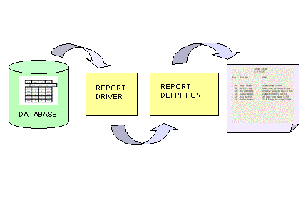
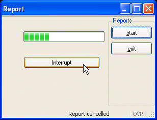

Summary:
This program generates a simple report of the data in the customer database table. The two parts of a report, the report driver logic and the REPORT program block (report definition) are illustrated. Then the program is modified to display a window containing a Progressbar, and allowing the user to interrupt the report before it is finished.

Genero BDL reports are easy to design and generate. The output from a report can be formatted so that the eye of the reader can easily pick out the important data.
The program logic that specifies what data to report (the report driver) is separate from the program logic that formats the output of the report (the report definition). This allows the report driver to supply data for multiple reports simultaneously, if desired. And, you can design template report definitions that might be used with report drivers that access different database tables.
The part of a program that generates the rows of report data (also known as input records) is called the report driver. The primary concern of the row-producing logic is the selection of rows of data. The actions of a report driver are:
From the standpoint of the row-producing side, these are the only statements required to create a report.
The report definition uses a REPORT program block to format the input records. REPORT is global in scope. It is not, however, a function; it is not reentrant, and CALL cannot invoke it.
The code within a REPORT program block consists of several sections, which must appear in the order shown:
Here you define the variables passed as parameter to the report, and the local variables. A report can have its own local variables for subtotals, calculated results, and other uses.
Although you can define page setup and destination information in this section, the format of the report will be static. Providing this same information in the START REPORT statement provides more flexibility.
Here you specify the required order for the data rows, when using grouping. Include this ORDER BY section if values that the report definition receives from the report driver are significant in determining how BEFORE GROUP OF or AFTER GROUP OF control blocks will process the data in the formatted report output. To avoid the creation of additional resources to sort the data, use the ORDER EXTERNAL statement in this section if the data to be used in the report has already been sorted by an ORDER BY clause in the SQL statement.
Here you describe what is to be done at a particular stage of report generation. The code blocks you write in the FORMAT section are the heart of the report program block and contain all its intelligence. You can use most BDL statements in the FORMAT section of a report; you cannot, however, include any SQL statements.
BDL invokes the sections and blocks within a report program block non-procedurally, at the proper time, as determined by the report data. You do not have to write code to calculate when a new page should start, nor do you have to write comparisons to detect when a group of rows has started or ended. All you have to write are the statements that are appropriate to the situation, and BDL supplies the “glue” to make them work.
You can write control blocks in the FORMAT section to be executed for the following events:
- Top (header) of the first page of the report (FIRST PAGE HEADER)
- Top (header) of every page after the first (PAGE HEADER)
- Bottom (footer) of every page (PAGE TRAILER)
- Each new row as it arrives (ON EVERY ROW)
- The start end of a group of rows (BEFORE GROUP OF) - a group is one or more rows having equal values in a particular column.
- The end of a group of rows (AFTER GROUP OF) - in this block, you typically print subtotals and other aggregate data for the group that is ending. You can use aggregate functions to calculate and display frequencies, percentages, sums, averages, minima, and maxima for this information.
- After the last row has been processed (ON LAST ROW) - aggregate functions calculated over all the rows of the report are typically printed here.
A two-pass report is one that creates temporary tables, therefore there must be an active connection to the database. The two-pass report handles sorts internally. During the first pass, the report engine sorts the data and stores the sorted values in a temporary file in the database. During the second pass, it calculates any aggregate values and produces output from data in the temporary files.
If your report definition includes any of the following, a two-pass report is required:
| Report Driver (custreport.4gl) |
|
Notes:
04 thru
12 define a local program record
pr_custrec,
with a structure like the customer database table.14 connects to the custdemo database.16 thru
25 define a custlist cursor
to retrieve the
customer table data rows, sorted by state, then city.27 thru 29 starts the
REPORT program block named cust_list,
and includes a report destination and page formatting
information.31 thru
33 retrieve the data rows one by one into the
program record pr_custrec and pass the
record to the REPORT
program
block.35 closes the report driver
and executes any final REPORT
control blocks to finish the report.37 disconnects from the custdemo database.| Report definition (custreport.4gl |
|
Notes:
01 The REPORT
control block has the pr_custrec record
passed as an argument. 02 thru
10 define a local program record
r_custrec to store the
values that the calling routine passes to the report. 12 tells the REPORT
control block that the records will be passed
sorted in order by state, then city. The ORDER EXTERNAL
syntax is used to prevent a second sorting of the
program records, since they have already been sorted by the
SQL statement in
the report driver. 14 is the beginning of the FORMAT
section.16 thru 20 The PAGE HEADER block specifies the layout
generated at the top of each page. <skipped line>
<skipped line>
Customer Listing
As of <date>
<skipped line>
<skipped line>
Store # Store Name Address
<skipped line>
<skipped line>
28 thru
41 specifies the layout generated for each row.
The data can be read more easily if each program record
passed to the
report is printed on a single row. Although there are four PRINT
statements in this control block, the first three PRINT
statements are
terminated by semi-colons. This suppresses the new line signal,
resulting in just a single row of printing. 106 TrueTest Hardware 6123 N. Michigan Ave Chicago IL 60104
101 Bandy's Hardware 110 Main Chicago IL 60068
43 and
44 start a new page for each group containing the same
value for r_custrec.city. 46 thru
49 specify a control block to be executed after the
statements in ON EVERY ROW
and AFTER GROUP
OF control block. This prints at the end of the report. The aggregate function
COUNT(*)
is used to print the total number of records
passed to the report. The USING
keyword formats the number. This appears as follows:<skipped line> Total number of customers: <count>
51 thru
53 specifies the layout generated at the bottom of each
page. The built-in function PAGENO is used to print the page number. The
USING keyword formats the number, left-justified. <skipped line>
<skipped line>
- <pageno> -
When a program performs a long process like a loop, a report, or a database query, the lack of user interaction statements within the process can prevent the user from interrupting it. In this program, the preceding example is modified to display a form containing start, exit, and interrupt buttons, as well as a progress bar showing how close the report is to completion.

In order to allow a user to stop a long-running report, for example, you can define an action view with the name "interrupt". When the runtime system takes control of the program, the client automatically enables a local interrupt action to let the user send an asynchronous request to the program. This interruption request is interpreted by the runtime system as a traditional interruption signal, as if it was generated on the server side, and the INT_FLAG variable is set to TRUE.
The Abstract User Interface tree on the front end is synchronized with the runtime system AUI tree when a user interaction instruction takes the control. This means that the user will not see any display as long as the program is doing batch processing, until an interactive statement is reached. If you want to show something on the screen while the program is running in a batch procedure, you must force synchronization with the front end.
The Interface class is a built-in class provided to manipulate the user interface. The refresh() method of this class synchronizes the front end with the current AUI tree. You do not need to instantiate this class before calling any of its methods:
CALL ui.Interface.refresh()
One of the form item types is a PROGRESSBAR, a horizontal line with a progress indicator. The position of the PROGRESSBAR is defined by the value of the corresponding form field. The value can be changed from within a BDL program by using the DISPLAY instruction to set the value of the field.
This type of form item does not allow data entry; it is only used to display integer values. The VALUEMIN and VALUEMAX attributes of the PROGRESSBAR define the lower and upper integer limit of the progress information. Any value outside this range will not be displayed.
A form containing a progress bar is defined in the form specification file reportprog.per.
| Form (reportprog.per) |
|
Notes:
05 contains the form
field for the PROGRESSBAR.07 contains the form
field for the interrupt action
view.15 defines the PROGRESSBAR
as formonly since its
type is not derived from a database column. The values range from 1 to 10.
The maximum value for the PROGRESSBAR
was chosen arbitrarily, and was set
rather low since there aren't many rows in the customer database table.16 defines the button ib as an interrupt action
view with TEXT of "Stop".The MAIN program block has been modified to open a window containing the form with a PROGRESSBAR and a MENU, to allow the user to start the report and to exit. A new function, cust_report, is added for interruption handling. The report definition, the cust_list REPORT block, remains the same as in the previous example.
| Changes to the MAIN program block (custreport2.4gl) |
|
Notes:
03 prevents the user from interrupting
the program except by using the interrupt
action
view.06 Opens the window and form containing
the PROGRESSBAR.08 thru
14 define a MENU
with two actions: This new function contains the report driver, together with the logic to determine whether the user has attempted to interrupt the report.
| Function cust_report (custreport2.4gl) |
|
Notes:
23 thru
31 now define the pr_custrec record
in
this function.32 thru
33 define some additional variables.35 thru
39 initialize the local variables.38 sets INT_FLAG
to FALSE.41 uses an embedded SQL statement
to retrieve the
count of the rows in the customer table and stores it in the variable
rec_total.43 calculates the value of break_num based
on the maximum value of the PROGRESSBAR, which is set at 10. After break_num rows have been processed, the program will increment
the PROGRESSBAR. The front end cannot handle interruption requests
properly if the display generates a lot of network traffic, so we do not
recommend refreshing the AUI and checking INT_FLAG after every row.45 thru
54 declare the custlist cursor
for the
customer table. 56 starts the report, sending the output to the
file custout.58 thru
68 contain the FOREACH
statement to output
each record to the same report cust_list used in the previous example.59 increments rec_count to keep track of
how many records have been output to the report.60 tests whether a break point has been reached,
using the MOD (Modulus) function.61 If a break point has been reached, the value of
pbar is incremented.62 The pbar value is displayed to the rptbar
PROGRESSBAR
form field.63 The front end is synced with the current AUI
tree.64 thru
66 The value of INT_FLAG is checked to
see whether the user has interrupted the program. If so, the FOREACH
loop is
exited prematurely. 70 thru
76 test INT_FLAG again and display a message
indicating whether the report finished or was interrupted. If the user did not interrupt the report, the
FINISH REPORT
statement
is executed.